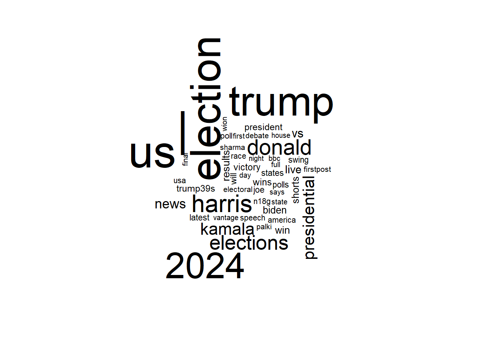
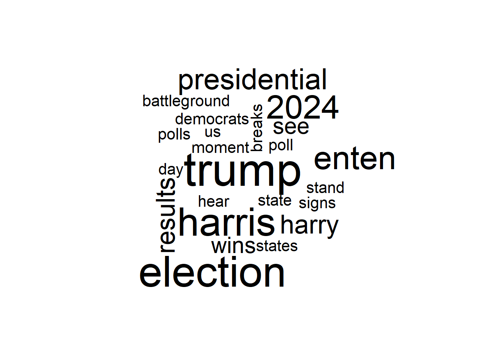
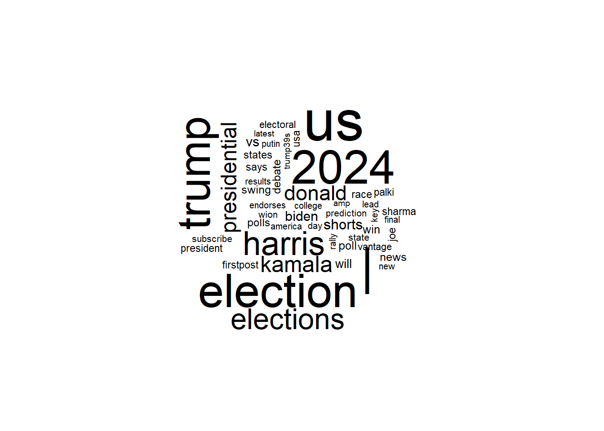
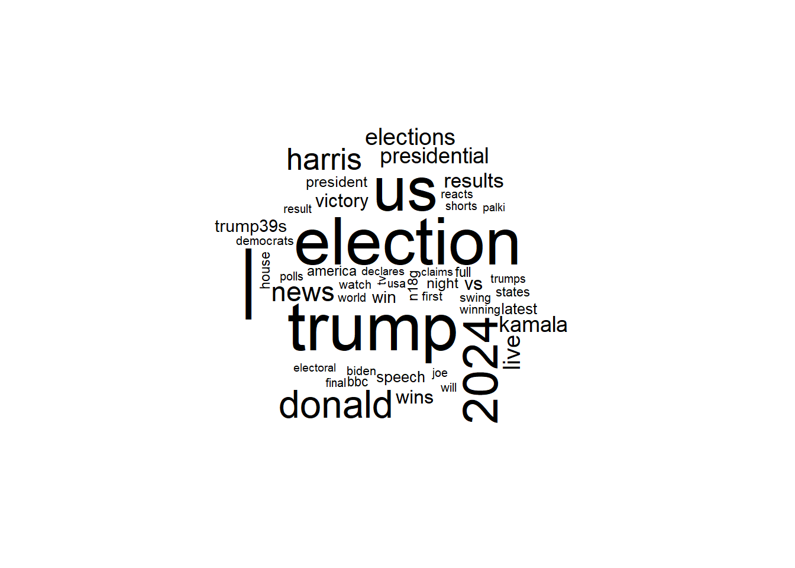
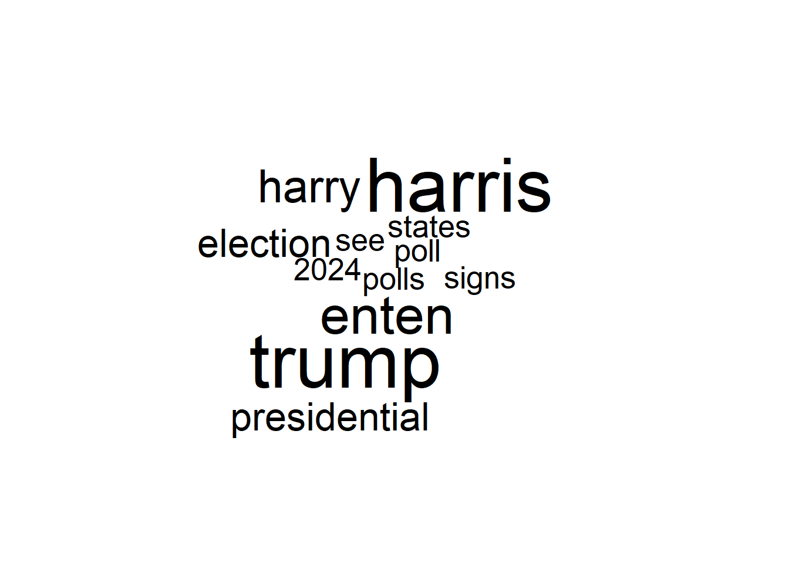
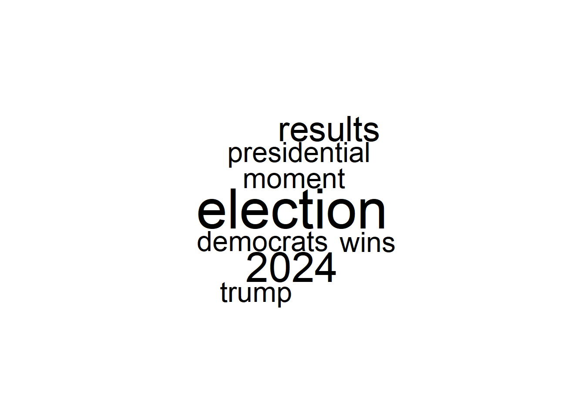

# Loading Libraries
pacman::p_load(tuber, stringi, lubridate, tm, wordcloud, ggplot2, httr, gridExtra, dplyr, stringr)Assignment 5
Introduction
YouTube plays a critical role in shaping public discourse, especially during major events such as the 2024 U.S. elections. In this project, I will demonstrate how to use natural language processing (NLP) techniques in R to analyze election-related videos.
The analysis will proceed in three steps:
- Analyzing All Content: I will start by examining all election-related videos to identify overall trends.
- Focusing on CNN: Next, I will narrow the analysis to videos uploaded by CNN to understand how its content differs from the general landscape.
- Comparing Before and After Election Day: Finally, I will explore how the narratives shift before and after Election Day for both datasets.
Relevant Libraries
To load all the necessary libraries for this analysis, I used the p_load() function from the pacman package. The tuber package is the main tool for retrieving data from YouTube. For text preprocessing, I use stringi to remove punctuation, and tm to eliminate stop words. Finally, the wordcloud package will be used to visualize the results.
Authenticating your YouTube API credentials
To access the YouTube API, authorization is required, which can be obtained through the Google Developer Console. Once this step is completed, the credentials must be authenticated. The tuber package provides a straightforward function to facilitate this authentication process.
# yt_oauth(ClientID, ClientSecret, token = "")Obtaining Data from YouTube
In the block below, I retrieve data on the videos that appear when searching for “US Elections 2024” on YouTube. Afterward, I preprocess the retrieved data for further analysis. A key step in this process is creating a data variable that will allow me to split the dataset into two subsets: one for pre-election day content and another for post-election day content.
# us_election2024 <- yt_search("US Elections 2024")
us_election2024 <- mutate(us_election2024, pub_date = as.Date(publishedAt))names(us_election2024) [1] "X" "video_id"
[3] "publishedAt" "channelId"
[5] "title" "description"
[7] "thumbnails.default.url" "thumbnails.default.width"
[9] "thumbnails.default.height" "thumbnails.medium.url"
[11] "thumbnails.medium.width" "thumbnails.medium.height"
[13] "thumbnails.high.url" "thumbnails.high.width"
[15] "thumbnails.high.height" "channelTitle"
[17] "liveBroadcastContent" "publishTime"
[19] "pub_date" cnn_posts <- us_election2024 |> filter(channelTitle == "CNN")
pre_election_posts <- us_election2024 |> filter(pub_date < as.Date("2024-11-05"))
post_election_posts <- us_election2024 |> filter(pub_date >= as.Date("2024-11-05"))
pre_el_cnn <- cnn_posts |> filter(pub_date < as.Date("2024-11-05"))
post_el_cnn <- cnn_posts |> filter(pub_date >= as.Date("2024-11-05"))Analysis of all YouTube Videos
The analysis in this section, as well as in the subsequent ones, will focus on the titles of YouTube videos. The goal is to identify the most prevalent words used in these titles to understand how uploaders are framing their coverage of the elections. To visualize the frequency of these words, Word Clouds will be used, providing a clear and intuitive way to highlight key themes.
titles <- us_election2024$title
titles_clean <- titles |> tolower() |>
stri_replace_all_regex("[[:punct:]]", "") |>
str_split(" ") |>
unlist()
word_freq <- titles_clean |> table() |> as.data.frame(stringsAsFactors = FALSE)
colnames(word_freq) <- c("word", "freq")
word_freq <- filter(word_freq, !word %in% tm::stopwords("en"))
set.seed(123)
wordcloud(word_freq$word, freq = word_freq$freq, max.words = 50)
Figure 1. Word Frequency in US-Election Related Youtube Videos as of 11/18/2024
As shown in the word cloud above, Donald Trump’s name appears more frequently than Kamala Harris’s name. I suspect this is because, as of November 18, 2024, Donald Trump had been announced as the election winner nearly two weeks prior. Consequently, media coverage has likely focused more extensively on him. Further analyses in the sections below will help to either support or refute this hypothesis.
Analysis of CNN Videos
Before conducting a before-and-after analysis of election coverage on YouTube, I will first examine whether CNN’s reporting on the elections differs from that of all media outlets in general. The script used for this analysis is provided below:
cnn_titles <- cnn_posts$title
cnn_titles_clean <- cnn_titles |> tolower() |>
stri_replace_all_regex("[[:punct:]]", "") |>
str_split(" ") |>
unlist()
cnn_word_freq <- cnn_titles_clean |> table() |> as.data.frame(stringsAsValues = F)
colnames(cnn_word_freq) <- c("word", "freq")
cnn_word_freq <- cnn_word_freq |> filter(!word %in% tm::stopwords("en"))
set.seed(123)
wordcloud(cnn_word_freq$word, freq = cnn_word_freq$freq, max.words = 50)
Figure 2. Word Frequency in YouTube Titles from CNN as of 11/18/2024
The word cloud indicates that Trump remains the most frequently mentioned name in YouTube video titles. However, the difference is less pronounced compared to the analysis of all videos. Another frequently appearing word in CNN titles is “Enten,” which refers to one of their journalists, Harry Enten.
Pre/Post Election Day Analysis
All videos
Before Election Day
In the word cloud below, containing only title of videos published before election day, Trump continues to lead in mentions within YouTube video titles. However, the difference is less pronounced compared to the first word cloud (fig. 1), aligning more closely with CNN’s coverage patternsb(fig. 2).
pre_election_posts <- us_election2024 |> filter(pub_date < as.Date("2024-11-05"))
pre_el_title = pre_election_posts$title
post_el_title = post_election_posts$title
pre_el_clean = pre_el_title |> tolower() |>
stri_replace_all_regex("[[:punct:]]", "") |>
str_split(" ")|>
unlist()
post_el_clean <- post_el_title |> tolower() |>
stri_replace_all_regex("[[:punct:]]", "") |>
str_split(" ") |>
unlist()
word_freq_pre_el <- table(pre_el_clean) |>
as.data.frame(stringsAsFactors = FALSE)
colnames(word_freq_pre_el) <- c("word", "freq")
word_freq_pre_el <- word_freq_pre_el |> filter(!word %in% tm::stopwords("en"))
set.seed(123)
wordcloud(word_freq_pre_el$word, freq = word_freq_pre_el$freq, max.words = 50)
Figure 3. Word Frequency in YouTube Titles Before Election Day as of 11/18/2024
After Election Day
In sharp contrast to fig. 3, Trump takes a clear lead in title mentions after the election results were published. This shift lends further support to my hypothesis that media outlets began reporting significantly more about Trump than Harris after he was declared the winner of the race.
post_election_posts <- us_election2024 |> filter(pub_date >= as.Date("2024-11-05"))
post_el_title = post_election_posts$title
post_el_clean <- post_el_title |> tolower() |>
stri_replace_all_regex("[[:punct:]]", "") |>
str_split(" ") |>
unlist()
word_freq_post_el <- post_el_clean |> table() |>
as.data.frame(stringsAsFactors = F)
colnames(word_freq_post_el) <- c("word", "freq")
word_freq_post_el <- word_freq_post_el |> filter(!word %in% tm::stopwords("en"))
set.seed(123)
wordcloud(word_freq_post_el$word, freq = word_freq_post_el$freq, max.words = 50)
Figure 4. Word Frequency in US-Election-Related YouTube Videos After Election Day as of 11/18/2024
CNN Videos
Before Election Day
In CNN posts published before election day, Trump and Harris are mentioned in titles at nearly equal rates. This finding is noteworthy, as it may suggest that CNN aimed to maintain a balanced level of exposure for each candidate. However, further research is required to substantiate this observation.
pre_el_cnn <- cnn_posts |> filter(pub_date < as.Date("2024-11-05"))
cnn_pre_el_titles = pre_el_cnn$title
cnn_pre_titles_clean <- cnn_pre_el_titles |> tolower() |>
stri_replace_all_regex("[[:punct:]]", "") |>
str_split(" ") |>
unlist()
cnn_pre_word_freq <- cnn_pre_titles_clean |> table() |> as.data.frame(stringsAsFactors = F)
colnames(cnn_pre_word_freq) <- c("word", "freq")
cnn_pre_word_freq <- cnn_pre_word_freq |> filter(!word %in% tm::stopwords("en"))
set.seed(123)
wordcloud(cnn_pre_word_freq$word, freq = cnn_pre_word_freq$freq, max.words = 50)
Figure 5. Word Frequency in US-Election Related YouTube Videos Before Election Day from CNN as of 11/18/2024
After Election Day
After election day, Harris disappears from the list of most frequent words in CNN’s YouTube titles. However, CNN appears to use terms like “election” and “result” significantly more often than the word “Trump.”
post_el_cnn <- cnn_posts |> filter(pub_date >= as.Date("2024-11-05"))
cnn_post_el_titles <- post_el_cnn$title
cnn_post_titles_clean <- cnn_post_el_titles |> tolower() |>
stri_replace_all_regex("[[:punct:]]", "") |>
str_split(" ") |>
unlist()
cnn_post_word_freq <- cnn_post_titles_clean |> table() |> as.data.frame(stringsAsValues = F)
colnames(cnn_post_word_freq) <- c("word", "freq")
cnn_post_word_freq <- filter(cnn_post_word_freq, !word %in% tm::stopwords("en"))
set.seed(123)
wordcloud(cnn_post_word_freq$word, freq = cnn_post_word_freq$freq, max.words = 50)
Figure 6. Word Frequency in US-Election Related Youtube Videos After Election Day from CNN as of 11/1/2024
Concluding Remarks
This project aimed to demonstrate the use of NLP techniques for conducting an exploratory data analysis of YouTube content. Code was provided to help others replicate the results.
The study revealed interesting patterns that can be explored further. For example, media outlets tend to mention Trump more than Harris in their YouTube content, especially after the election results were announced. CNN, however, seemed to offer balanced coverage of both Trump and Harris before election day. After the results were published, CNN, like other media, reduced coverage of Harris. Another notable difference with CNN is that, after the results were announced, they used more neutral terms like “results” or “election” and less frequently mentioned “Trump.”